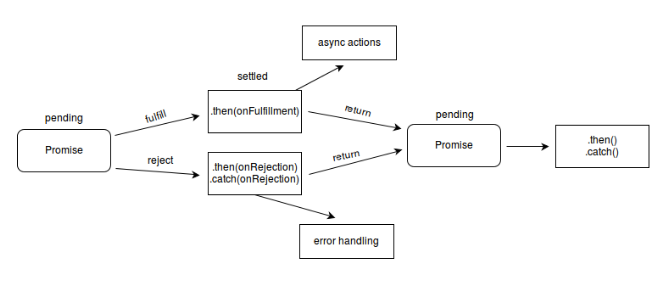

The Promise object is used for asynchronous computations.
A Promise represents a value which may be available now, or in the future, or never.
executor -
A function that is passed with the arguments resolve and reject.
The executor function is executed immediately by the Promise implementation, passing resolve and reject functions (the executor is called before the Promise constructor even returns the created object).
As the Promise.prototype.then() and Promise.prototype.catch() methods return promises, they can be chained.

------------------------------------------------------------------------------------
A Promise is in one of these states:
pending: initial state, not fulfilled or rejected.
fulfilled: meaning that the operation completed successfully.
rejected: meaning that the operation failed.
------------------------------------------------------------------------------------
Usage-
We start by instantiating a new Promise object and passing it a callback function.
The callback takes two arguments, resolve and reject, which are both functions.
All your asynchronous code goes inside that callback.
If everything is successful, the promise is fulfilled by calling resolve().
In case of an error, reject() is called with an Error object. This indicates that the promise is rejected.
------------------------------------------------------------------------------------
Reference - sitepoint
$(function () {
var promise = new Promise(function (resolve, reject) {
var request = new XMLHttpRequest();
request.open('GET', 'http://api.icndb.com/jokes/random');
request.onload = function () {
if (request.status == 200) {
resolve(request.response); // we got data here, so resolve the Promise
} else {
reject(Error(request.statusText)); // status is not 200 OK, so reject
}
};
request.onerror = function () {
reject(Error('Error fetching data.')); // error occurred, reject the Promise
};
request.send(); //send the request
});
console.log('Asynchronous request made.');
promise.then(function (data) {
console.log('Got data! Promise fulfilled.');
document.getElementsByTagName('body')[0].textContent = JSON.parse(data).value.joke;
}, function (error) {
console.log('Promise rejected.');
console.log(error.message);
});
});
Custom Prom Function - sv.get("http://api.icndb.com/jokes/random").then(success, reject)
function successFun(data) {
console.log('Got data! Promise fulfilled.');
alert(JSON.parse(data).value.joke);
}
function errorFun(error) {
console.log('Promise rejected.');
alert(error.message);
}
var sv = {
get: function (url) {
return myPromise(url);
}
}
sv.get("http://api.icndb.com/jokes/random").then(successFun(data), errorFun(error));